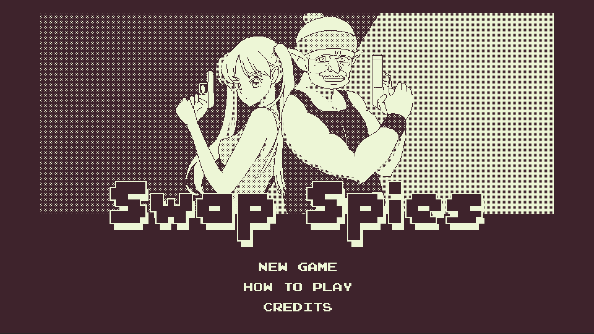
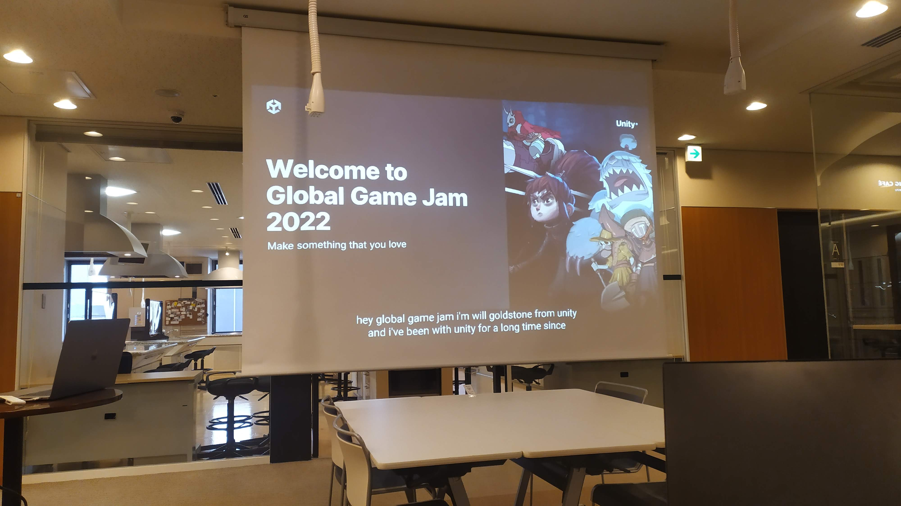
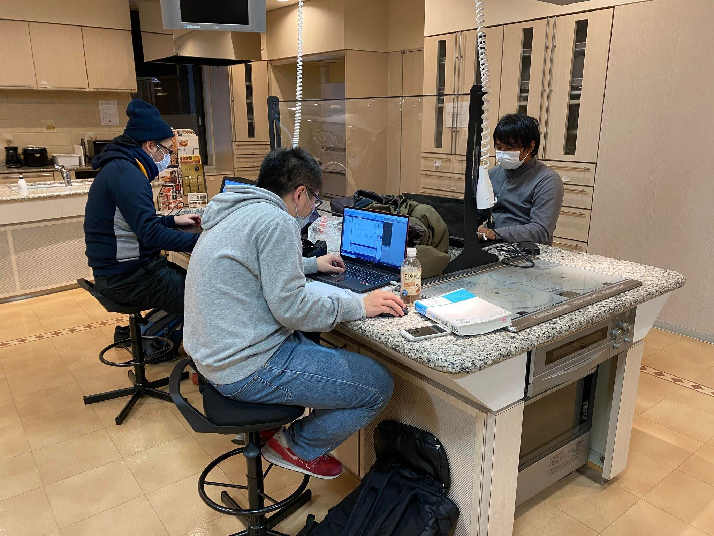

Swap Spies
About Me
Look what I made!
So during Covid-19, I was unable to do anything so much. I haven't gone to programmer community event like I used to. Until, I got invitation from Yasuda-san to join Global Gamejam Kumamoto Branch in 2022. Global Gamejam has been inactive for awhile in Kumamoto, so I'm really excited to join the event. Together with Yano-san and Kimura-san, we were able to make a game in a week!

The detail of the event can be seen here.
Project Page :
https://v3.globalgamejam.org/2022/games/swap-spies-2
Try the game here :
https://coef.itch.io/swap-spies
 